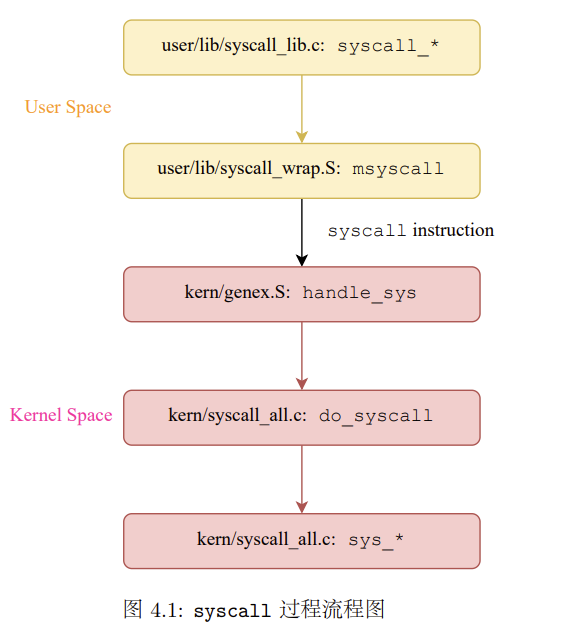
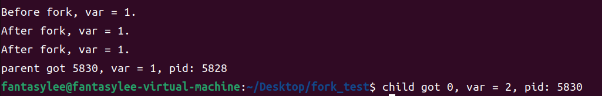
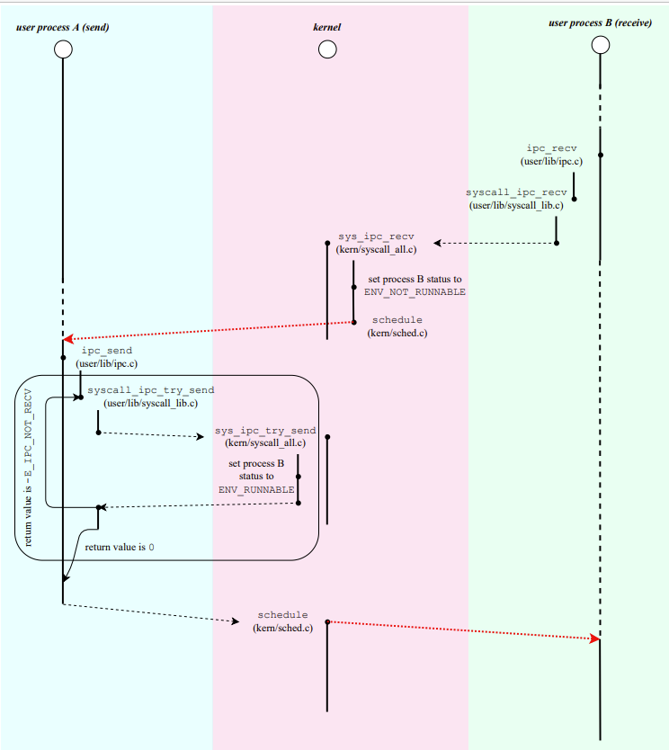
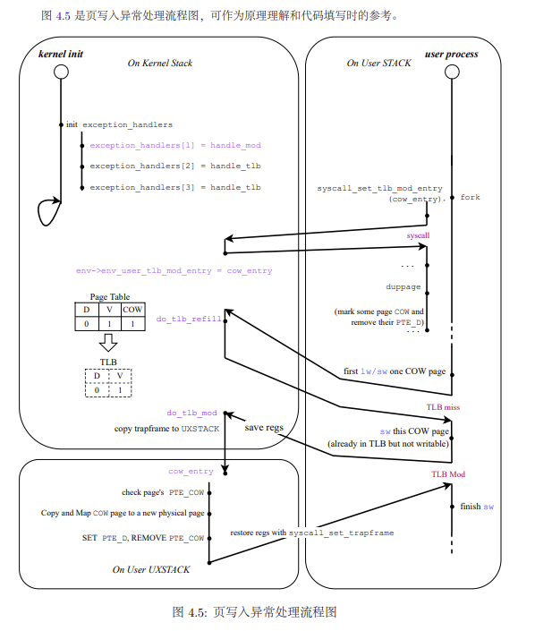

BUAA_OS_lab4
BUAA_OO_lab4学习日记
Thinking
Thinking 4.1
问：
- 内核在保存现场的时候是如何避免破坏通用寄存器的？
- 系统陷入内核调用后可以直接从当时的 $a0-$a3 参数寄存器中得到用户调用 msyscall 留下的信息吗？
- 我们是怎么做到让 sys 开头的函数“认为”我们提供了和用户调用 msyscall 时同样 的参数的？
- 内核处理系统调用的过程对 Trapframe 做了哪些更改？这种修改对应的用户态的变化是什么？
答：
由stackframe.h文件可以看出，在SAVE_ALL时将各个通用寄存器的值保存在在帧栈（sw），在RESTORE_ALL再将各个寄存器值取出，但是注意压栈和弹栈的顺序
1
2
3
4
5
6
7
8
9
10
11
12
13
14
15//stackframe.h
.macro SAVE_ALL
sw $0, TF_REG0(sp)
sw $1, TF_REG1(sp)
//……
sw $30, TF_REG30(sp)
sw $31, TF_REG31(sp)
//……
.macro RESTORE_ALL
lw $31, TF_REG31(sp)
lw $30, TF_REG30(sp)
//……
lw $2, TF_REG2(sp)
lw $1, TF_REG1(sp)
lw sp, TF_REG29(sp) /* Deallocate stack */可以， 调用函数时$a0-$a3默认储存前四个参数，用于参数传递，内核中可能有改变，因此再次以这些参数调用其他函数时需要重新以sp为基地址，按相应偏移从用户栈中取用这四个寄存器值
借助Trapframe结构体，来获取用户态中传递过来的值
改变了reg[2]即v0寄存器的值，就是系统调用函数的返回值，这个返回值可以标志系统调用是否成功，不成功就输出相应的错误码。
Thinking 4.2
问：
思考 envid2env 函数: 为什么 envid2env 中需要判断 e->env_id != envid 的情况？如果没有这步判断会发生什么情况？
答：envid具有唯一性，防止取到错误的进程控制块
Thinking 4.3
问：
思考下面的问题，并对这个问题谈谈你的理解：请回顾 kern/env.c 文件 中 mkenvid() 函数的实现，该函数不会返回 0，请结合系统调用和 IPC 部分的实现与 envid2env() 函数的行为进行解释。
答：
mkenvid函数不会返回0，所以没有进程的envid为0，但是envid2env的实现我们发现若传入的envid参数为0，我们直接返回当前进程。于是系统调用和IPC可以通过envid为0获取当前进程，于是这部分很重要。
Thinking 4.4
问：
关于 fork 函数的两个返回值，下面说法正确的是：
A、fork 在父进程中被调用两次，产生两个返回值
B、fork 在两个进程中分别被调用一次，产生两个不同的返回值
C、fork 只在父进程中被调用了一次，在两个进程中各产生一个返回值
D、fork 只在子进程中被调用了一次，在两个进程中各产生一个返回值
答：
C
父进程中调用fork函数，并返回子进程的id
Thinking 4.5
问：
我们并不应该对所有的用户空间页都使用 duppage 进行映射。那么究竟哪些用户空间页应该映射，哪些不应该呢？请结合 kern/env.c 中 env_init 函数进行的页 面映射、include/mmu.h 里的内存布局图以及本章的后续描述进行思考。
- 首先肯定映射用户空间的有效页面。
- 用户空间中ULIM到USTACKTOP之间的部分，储存的是页表信息，异常处理栈等，或是已经完成了拷贝的（页表），或是父子进程共享的（异常处理栈），或是都不需要用到的。所以不需要映射。
所以，最终需要被映射的页面只有USTACKTOP之下的有效部分
Thinking 4.6
问：
在遍历地址空间存取页表项时你需要使用到 vpd 和 vpt 这两个指针，请参考 user/include/lib.h 中的相关定义，思考并回答这几个问题：
- vpt 和 vpd 的作用是什么？怎样使用它们？
- 从实现的角度谈一下为什么进程能够通过这种方式来存取自身的页表？
- 它们是如何体现自映射设计的？
- 进程能够通过这种方式来修改自己的页表项吗？
答：
1 | |
- vpt与vpd分别是用户页表与用户页目录的地址，当作数组方式使用即可
- vpd是自映射机制取址
- vpd实现等价于 $UVPT | UVPT >> 10$
- 不能，修改只能在内核态下实现
Thinking 4.7
问：
在 do_tlb_mod 函数中，你可能注意到了一个向异常处理栈复制 Trapframe 运行现场的过程，请思考并回答这几个问题：
- 这里实现了一个支持类似于“异常重入”的机制，而在什么时候会出现这种“异常重 入”？
- 内核为什么需要将异常的现场 Trapframe 复制到用户空间？
答：
- 当用户程序写入了一个
COW页，OS就会进入页写入异常的处理程序，最终调用用户态的pgfault函数进行处理。但是，如果在pgfault函数的处理过程中又写入了一个COW页，就会再次进入页写入异常处理程序，然后又调用pgfault函数……这就出现了”中断重入“的现象。因为在这个函数里，我们只对异常处理栈所在的页进行了读写（异常处理程序中的临时变量都保存在异常处理栈），而异常处理栈并非是父子进程共享的，不可能会有COW标志位。所以不会出现 - 异常处理是自定义的在用户态下进行，而用户态访问不到内核，所以需要将现场保存到用户空间
Thinking 4.8
问：
在用户态处理页写入异常，相比于在内核态处理有什么优势？
答：
出现错误更少，即使程序崩溃，也不会影响系统的稳定
Thinking 4.9
问：
请思考并回答以下几个问题：
- 为什么需要将 syscall_set_tlb_mod_entry 的调用放置在 syscall_exofork 之前？
- 如果放置在写时复制保护机制完成之后会有怎样的效果？
答：
- 写时复制异常处理父子进程都需要设置，保证父子进程的异常出口都设置
- 父进程在执行完syscall_exofork后就返回了，等到写时复制机制完成后再设置的话，父进程的异常处理就不是写时复制了
实验难点
系统调用
异常处理行为
- 跳转异常分发代码处
- 进入异常分发程序，根据cause寄存器的值判断异常类型并跳转到对应的处理程序
- 处理异常，返回

系统从用户态切换到内核态后，内核首先需要将原用户进程的 运行现场保存到内核空间（在 kern/entry.S 中通过 SAVE_ALL 宏完成），随后的栈指针则指向 保存的 Trapframe
进程空间分配（实质是建立映射）
IPC进程间通信
会大量使用 srcva 为 0 的调用来表示只传 value 值，而不需要传递物理页面，换句话说，当 srcva 不为 0 时，我们才建立两个进程的页面映射关系
核心：页表的插入
fork函数
函数理解
fork_test实验

父进程返回值不为0，子进程返回值为0
总之二者对应进程控制块不同
实验感想
单纯完成实验并不难，核心在于对各个处理流程的理解

